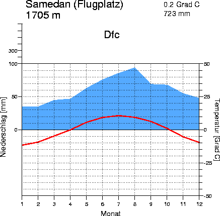
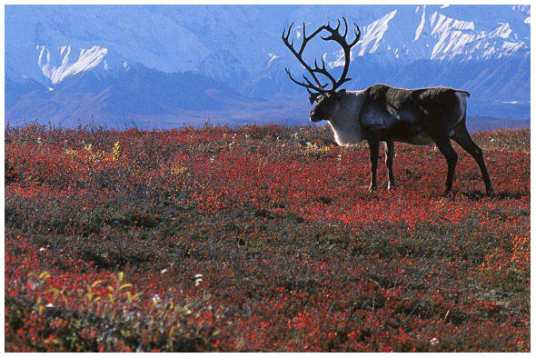

Ik heb Toendra Klimaat gekozen omdat het interessante en vooral koude plekken zijn. De populatie is helaas ook niet zo groot op die plekken. Door de kleine beetjes gras die er groeien (en op sommige plekken eeuwige sneeuw) is het heel erg mooi daar. Monat = maand en niederschlag = neerslag. De rode lijn zijn de temperaturen en het blauwe de neerslag.
 